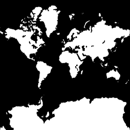
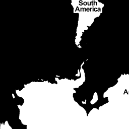
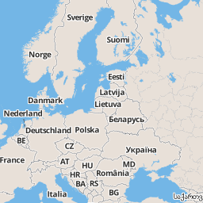

Anatomy of a Web Map
Housekeeping!
You can follow along here:
sta.mn/qhg. Links are in blue boxes,
green is just emphasis. You can comment and edit on
github!Now let's get started :)
Today we will be talking about the simplest, most generic web map. But we will note exceptions.
(There are always exceptions!)
This will be a complete open source stack.
We'll talk a lot about Google, but we're going to show you a 100% Google-free stack
But first, what does anatomy have to do with a web map?
Well,
Both bodies and web maps have components and systems that interact and intertwine.
Instead of cells, maps have data.
Instead of circulatory and digestive systems, web maps have styles and tiles and servers.
oh my!
So,
What is a web map?
To answer that question, maybe it's more helpful to ask,
How is a web map different than a digital map?
Digital: involves a computer, but might not be accessible by the internet.
A web map is a kind of digital map. And both are obviously quite different from analog maps, such as paper maps and atlases!
We're talking about web maps that you view in a browser, like...
Making maps for mobile devices can be similar, but we're not talking about that today.
We're also not talking about digital globes like Google Earth.
ok ok
but how about a little history:
How did web maps come to be?
First, there were digital maps like
ArcGIS.
Although useful, ArcGIS for the Web is not user friendly :(
Also usually ugly
(though the one we just showed was not too bad)
In 1996, Mapquest launched its web service.
 ta da!
ta da!Directions! Online! Revolutionary!
The problem: it was slow to load :(
MapQuest required a full page refresh to scroll or zoom, and was always aligned to tile boundaries.
Google Maps really paved the way for online mapping, beginning in 2005.
But what was the revolution?
Was it the interface?
The red marker?
The weather widget?
No!
It was the
tile. 
Let's talk about tiles for a minute. And to do so, we're borrowing some info from amazing mapper
Lyzi Diamond, who got a bunch of info about tiles from
Mapbox.
Thanks y'all! <3 <3 <3
Now here goes...
Each zoom level has its own set of tiles!
Zoom level 0: 1 tile for the world.

With each additional zoom level, the number of tiles increases exponentially.
 Zoom level 1: 4 tiles for the world.
Zoom level 2: 16 tiles for the world.
Any guesses how many tiles are in zoom level 3?
Aw yeah, you got it. 64! Y'all are great at math.
Map tiles only render when you're looking at them in that moment, so tiles make maps hella fast.
Map tiles are just images on the web, so you can link to them individually.
In order to understand how this works, let's break down the URL.
http://tile.openstreetmap.org/4/2/3.png -- this is the name of the tile server.
http://tile.openstreetmap.org/4/2/3.png -- this is the z value, or the zoom level.
http://tile.openstreetmap.org/4/2/3.png -- This is the y/x value, or the place in the grid where the tile lives.
In a little bit, we will look at how to include tiles in our web map.
(end of lyzi's slides)
All tiles
=*
same size! 256x256 pixels

*mostly
Tiles are rendered in advance (usually) then stored in a cache
Tiles could be a road map, a satellite image, or anything else that's a raster! [Example images]

All these little tiles load
way faster than one big map.
Web maps like this load the tiles that are on your screen. If the map is “smart,” it will pre-load tiles outside of the screen, along the top, bottom, left, and right.

This kind of map is colloquially called a
slippy mapGoogle maps use Mercator projection, which is designed for sailors BUT it works well for flat maps.
Speaking of projections...
OMG there are so many!
Anyway, so all other slippy maps and slippy map software followed Google's lead, with tiles at the base.
Not surprisingly, a collection of tiles makes up what we call the map's base layer.
When we layer things like markers on top of them, we call those data layers or content layers.
Here's the breakdown of how these pieces fit together:
Make sense?
Great!
Now we're ready to dive a little deeper into the whole web map anatomy!
[code: show the simplest possible leaflet map]
What does the javascript library do? Grabs the tiles, adds content layer, handles interaction.
[copy and paste Lyzi slides about tiles through pt 2 talking about feature layers]
Content layers
point, line, polygon
interactivity:
There’s a limit to how much data you can have in your content layer, because it will take more time to load. Above a certain size, vectors actually become too much data to load at a certain speed.
Filetypes: GIS uses shapefiles, but web maps prefer KML, or more recently, GeoJSON
Content layers could also be made from transparent tiles
3 exceptions to the simplified story!
Exception #1: Tiles are always rasters EXCEPT when they're not!
vector tiles! What are they?
vector tiles: they are an alternative to a database that makes raster tiles. Still smush into PNG
“what is difference b/t raster and vector tiles?” // put questions into the presentation.
Raster: ask for data to fit into tile
Vector: already have vector data sliced up in the way that I will make raster tiles
So someone has to go through and chop up that data, like MapBox
Exception #2: Can’t interact with features on a raster. BUT
UTFGrid (mapbox invention) makes it possible.

UTFGrid is an invisble tile layer made up of arbitrary letters which are indexes into the clickable data
The invisible overlay would make this raster clickable!
Exception #3:
D3 exists outside the world of tiles
you can’t easily make road map in D3 BUT can do things that are clumsy in slippy maps like...

different map projections (in the browser!)
sta.mn/jfs
D3

IS

IN

SANE
Very powerful, but steep learning curve
So.
Where do I start?
It depends on want to make…
Do I need my own tiles?
No? Use these! [list of examples, OSM styles, CloudMade, Stamen, MapBox, MapQuest]
Yes? Use
TileMill to design your own tiles.
Will generate a pile of tiles [screenshot]. Saves them as
MBTiles.
You can host these files on
MapBox, or...
Do I need a content layer?
No? Put all your data into the tiles. Possibly use UTFGrid for interactivity
Yes? Convert a Shapefile to GeoJSON with
OGRE or write your own GeoJSON with
geojson.ioFinally,
CartoDBtakes care of almost all of this for you!
Thanks to:
You!
Presentation made with
big


 choropleth maps or... sta.mn/jyx
choropleth maps or... sta.mn/jyx cartograms or... sta.mn/q99
cartograms or... sta.mn/q99


{kind=link}